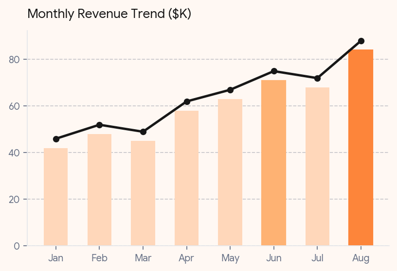
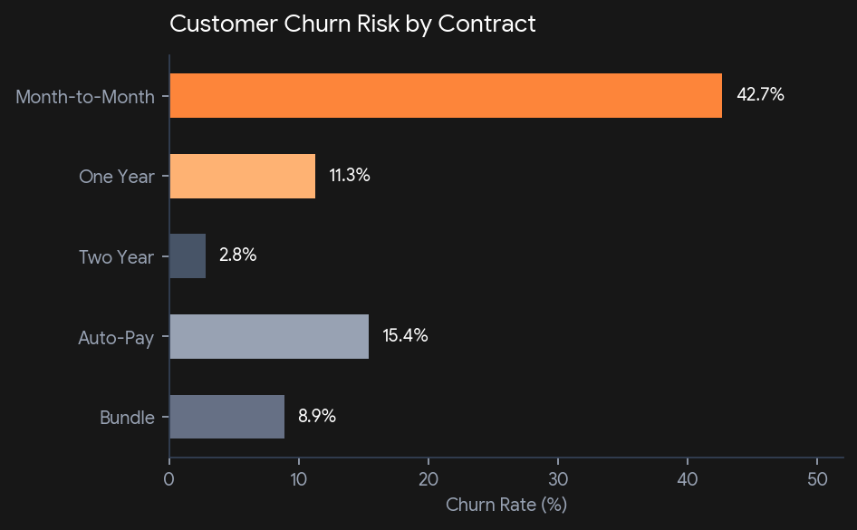

BI & Data Visualization
Designing clean, interactive Power BI and Tableau dashboards that surface KPIs, trends, and drill-down insights for stakeholders.
Power BI
Tableau
DAX
Steny's analytical rigor and intuitive dashboards transform complex datasets into clear, high-impact business decisions.
From raw, messy spreadsheets and relational databases to executive-ready visual storytelling and predictive models.
Designing clean, interactive Power BI and Tableau dashboards that surface KPIs, trends, and drill-down insights for stakeholders.
Writing optimized queries, CTEs, and automated ETL cleaning workflows to ensure reliable, audit-ready analytical datasets.
Applying exploratory data analysis, hypothesis testing, cohort modeling, and forecasting to uncover hidden growth levers.

Consolidated 120K+ retail transactions into an automated KPI dashboard revealing an 18% margin opportunity.
Explore Case Study ↗
Built a predictive churn scoring pipeline achieving 86% ROC-AUC to guide proactive customer retention campaigns.
Explore Case Study ↗
Engineered SQL window-function pipelines across 500K+ orders to track repeat purchase velocity and RFM segments.
Explore Case Study ↗